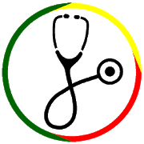

Especificação
Documento de Visão
Sumário
- 1. Introdução
- 1.1 Propósito
- 1.2 Escopo
- 1.3 Visão Geral do Documento
- 2. Posicionamento
- 2.1 Oportunidade de negócio
- 2.2 Instrução do Problema
- 2.3 Instrução de Posição do Produto
- 3. Visão Geral do Produto
- 3.1 Escopo do Produto
- 3.2 Propósito do produto
- 3.3 Recursos do produto
- 4. Visão Geral do Produto
- 4.1 Perfis das Partes Interessadas
- 4.2 Perfis do Usuário
- 5. Restrições
- 6. Referências
1. Introdução
1.1 Propósito:
Este artigo apresenta as justificativas para o desenvolvimento da aplicação mobile Dulce (Dispositivo Unificado de Colaboração para Construção de Escala), e visa auxiliar na compreensão do contexto em que esta ferramenta se inserirá. A partir deste propósito, a equipe procurará alcançar o desenvolvimento de uma solução tecnológica inovadora de gestão de escalas em redes hospitalares.
Além dessas descrições expostas, serão demostradas diagramas que evidenciem o funcionamento e características específicas do sistema que permitirão aos desenvolvedores um maior fluxo de produtividade.
1.2 Escopo:
O documento de visão tem como objetivo informar aos envolvidos a problematização a ser resolvida e as funcionalidades do produto que serão atendidas pelo projeto Dulce. Tendo em vista que este documento será atualizado durante a produção do sistema.
1.3 Visão geral do documento:
O conteúdo deste documento está organizado de forma a fornecer: uma visão dos envolvidos no projeto; as necessidades enfrentadas; os benefícios desejados; e as funcionalidades do sistema face às suas características desenvolvidas para atender a estes benefícios. Também são apresentados aqui requisitos importantes para o produto final.
2. Posicionamento
2.1 Oportunidade de negócio:
Com a implantação da Dulce, as áreas estratégicas de gestão de pessoas no ambiente administrativo hospitalar poderão se tornar mais eficazes no monitoramento de escalas e no controle de relatórios gerenciais. Dulce será um aplicativo voltado para o gerenciamento de escalas no ambito hospitalar. Com a implementação da Dulce, a relação entre o gestor e funcionários alcançará a eficácia organizacional na problemática de remanejamento de escalas na rede hospitalar.
2.2 Instrução do problema:
Atualmente, a gestão de controle administrativo que se encontra disponível no mercado possui limitações na implantação de sistemas de escalas adaptadas ao âmbito hospitalar da rede de saúde do país. O problema em questão reside na lacuna de mercado deixado pela ineficiencia dos principais aplicativos que visam a gestão de escalas na rede hospitalar.
| Tipo | Descrição |
| Problema | A dificuldade na gestão de pessoas e no gerenciamento das escalas. |
| Afeta | Rotinas administrativas, gestão de pessoal e seus correlatos. |
| Impactos | Otimização dos inúmeros recursos financeiros, sociais, de gestão de pessoas e de gestão operacional. |
| Solução | A Dulce permitirá o controle e gerenciamento das escalas com relatórios de gestão, para uma melhor tomada de decisão dos gestores, e a visualização de horários e solicitação de troca de escalas dos profissionais da saúde. |
DIAGRAMA DE FISHBONE:

2.3 Instrução de posição do produto:
A Dulce fornecerá o suporte necessário aos gestores de hospitais a fim de possibilitar um maior controle sobre escalas e remanejamentos de equipes de trabalho. O aplicativo terá as seguintes funcionalidades: consultas de escalas; pedidos de alterações e remanejamentos em tempo real; notificações ao gestor do devido setor sobre afastamentos legais, direitos e garantias, como a exemplo de atestados ou licenças médicas que impactam diretamente o gerenciamento das escalas.
3. Visão Geral do Produto
3.1 Escopo do produto:
Dulce será utilizada para documentar as escalas planejadas e as realizadas, agindo como um sistema de auditoria com a finalidade de fornecer informações relevantes aos gestores para uma melhor organização e gerenciamento das escalas montadas para seus funcionários. Ao passo que também produzirá soluções inteligentes para o dia a dia dos hospitais e os setores de recursos humanos frente aos gargalos encontrados na adequação das escalas dos profissionais de saúde.
3.2 Propósito do produto:
Dulce tem como objetivo apresentar soluções tecnológicas e inovadoras no trato de rotinas administrativas de múltipos setores da organização hospitalar, pois o impacto decisório influencia no organograma hospitalar e o fluxograma dos setores.
3.3 Recursos do produto:
O principal recurso ou funcionalidade do produto é assessorar a montagem de escalas de funcionários, promovendo assim aos gestores inúmeras informações importantes para tomada de decisão, e aos funcionários maior interação com as escalas, sendo possível visualizar, solicitar alterações ou enviar atestados.
Dulce é um aplicativo para smartphones que está sendo desenvolvido em React-Native para as plataformas Android e IOS.
4. Descrição das partes envolvidas
4.1 Perfis das Partes Interessadas:
- Cliente: o cliente é o idealizador do projeto.
- Usuários: Público interno das organizações hospitalares.
- Equipe: é composta por graduandos em Engenharia de Software pela Universidade de Brasília, no Campus Gama, discentes das disciplinas de Engenharia de Produto de Software e Métodos de Desenvolvimento de Software.
TRAKCARE
- É o sistema eletrônico atualmente utilizado pela Secretaria de Saúde do DF (SES-DF). Este reúne todos os dados de consultas, exames e histórico médico pessoais da população que utiliza a rede pública de saúde do Distrito Federal.
MOBI SAÚDE
- Por sua vez este é um aplicativo que facilita a administração hospitalar e as unidades de saúde realizando o controle da escala de funcionários e agilizando a comunicação entre os membros do corpo clínico.
Doctor ID
- O DoctorID é um software de gestão de plantões médicos. Possui soluções eficientes para otimizar, simplificar e automatizar o processo na hora de organizar os plantões de um hospital.
Magma Solution
-
Magma Solution é uma empresa focada otimizar e facilitar a administração de UTIs. Atua em três frentes de trabalho:
Terceirização de unidades de terapia intensiva, Automação de UTIs e Gestão de equipes de plantão
GEP - SESACRE
-
GEP é um software criado para auxiliar na montagem das Escalas de Hospitais,
garantindo assim que os responsáveis construam suas respectivas escalas e não insiram funcionários em concorrência de horário,
que o padrão não seja excedido, e que se tenha uma noção instantânea dos valores pagos pelos Plantões adicionais, além de acessa-lo em qualquer lugar que tenha conectividade.
 - O sistema necessita de informações que serão fornecidas pela SES-DF;
- O sistema deverá estar acessível até julho de 2018; e
- O sistema precisa funcionar tanto em Android como em iOS.
4.2 Perfis do Usuário:
Os Usuários serão os gestores hospitalares, corpo administrativo e profissionais da saúde, como, médicos, fisioterapeutas e enfermeiros, que trabalharem em determinado hospital.
4.3 Alternativas e Concorrência


5. Restrições:
6. Referências:
Vision – Scaled Agile Framework, Acessado em: 19/03/2018, 21:10, Horário de Brasília.
O Globo Saúde Pública do país sofre de má gestão, Acessado em: 20/03/2018, 20:09, Horário de Brasília.
Secretaria de Estado de Saúde do Distrito Federal, Acessado em: 20/03/2018, 20:16, Horário de Brasília.
Projeto Receituário Médico - Documento de visão, Acessado em: 20/03/2018, 20:54, Horário de Brasília.
Radar Empresarial Segurança nos processos, Acessado em: 22/03/2018, 17:30, Horário de Brasília.
Aplicativo de gestão Hospitalar, Acessado em: 22/03/2018, 18:50, Horário de Brasília.
TrakCare Sistema de informação em Saúde,Acessado em: 22/03/2018, 20:54, Horário de Brasília.